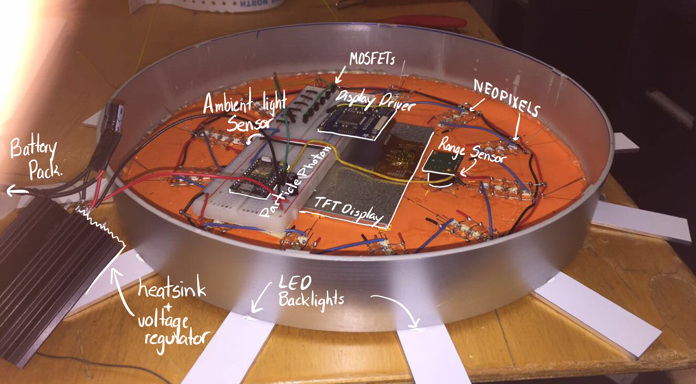

Modern Weasley Clock
Based on the Harry Potter Weasley Clock, the hardware and iOS app that lets you know where your family or roommates are in the locations that matter. Hack the North Winner 2017 $1000 1517 Grant

Description
The Weasley Clock from Harry Potter. Living together with two other roommates, we also wanted to quickly know where people were, like if someone was doing groceries, or who was at home already! The design puts a spin on a traditional clock by replacing times with locations and clock hands for people. So at a glance you can see where everyone is, only at the locations that matter.The clock comes in two forms: as a physical clock and as an iOS app. The physical clock has four different colored LEDs to represent four different people, and instead of the numbers 1 to 12, there are icons for different locations. The iOS app acts as the location tracker and updates the physical clock whenever the person's location changes. You can choose your location points, i.e. your work location may be different from another person's. For this project I was responsible for all the hardware and embbeded. Michelle did all the iOS programming. In the end we met in the middle and connected the two systems.
How it works
The clock was made out of a round clock casing and some black cardboard (and it came together so much better than we expected). The LEDs consisted of a bunchh of neopixels all connected in series. In the middle there is a giant touch screen display. The idea was that this would show a legend communicating everyones name and there corresponding color. Unfortunatly we ran out of time in the hackathon and did get the display working properly in time. There was also a range sensor and ambient light sensor on the front. The entire thing is battery powered so we wanted it to last as long as possible. Using the range sensor we could detect if someone walked infront of the clock and then the screen would turn on. Likewise the ambeint light sensor would sense the brightness in the room so the leds and display could ajdust themselves. These two techniques allowed for the clock to last must linger on one charge. The entire system was controlled by a particle photon microcontroller. This is an arduino compatible microcontroller than connects to the internet. This made communicating with the iOS app much easier. The iOS app let the user set the location of each place. It tracked the location of the user in real time and would undate the clock automatically.
The Clock Front Face
iOS App
The Clock Side Face